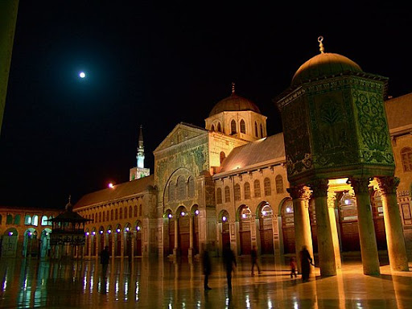

Introduction to Damascus

Damascus is one of the oldest continuously inhabited cities in the world, with a rich history spanning thousands of years. Known as the "City of Jasmine," it is the capital of Syria and remains a cultural, political, and historical hub.
Historical Significance
- Damascus was once the capital of the Umayyad Caliphate, one of the largest empires in history.
- It has a rich history of trade, culture, and religious significance, with famous landmarks like the Umayyad Mosque.
- The city is also home to a number of UNESCO World Heritage sites, including the Old City of Damascus.
Damascus Cuisine
- Famous for its delicious food such as kebab, hummus, and shawarma.
- Local markets like the Souq Al-Hamidiyya are famous for offering a variety of traditional Syrian dishes and spices.
- Damascus is also known for its traditional sweets, including Baklava and Knafeh.
Despite the challenges faced by the city in recent years, Damascus remains a symbol of Syrian heritage, culture, and resilience.
Damascus - Key Information
| Fact | Details |
|---|---|
| Population | Approximately 2 million people |
| History | Founded in the 3rd millennium BC |
| Famous Landmark | Umayyad Mosque |
| Major Industry | Textiles, Crafts, and Tourism |